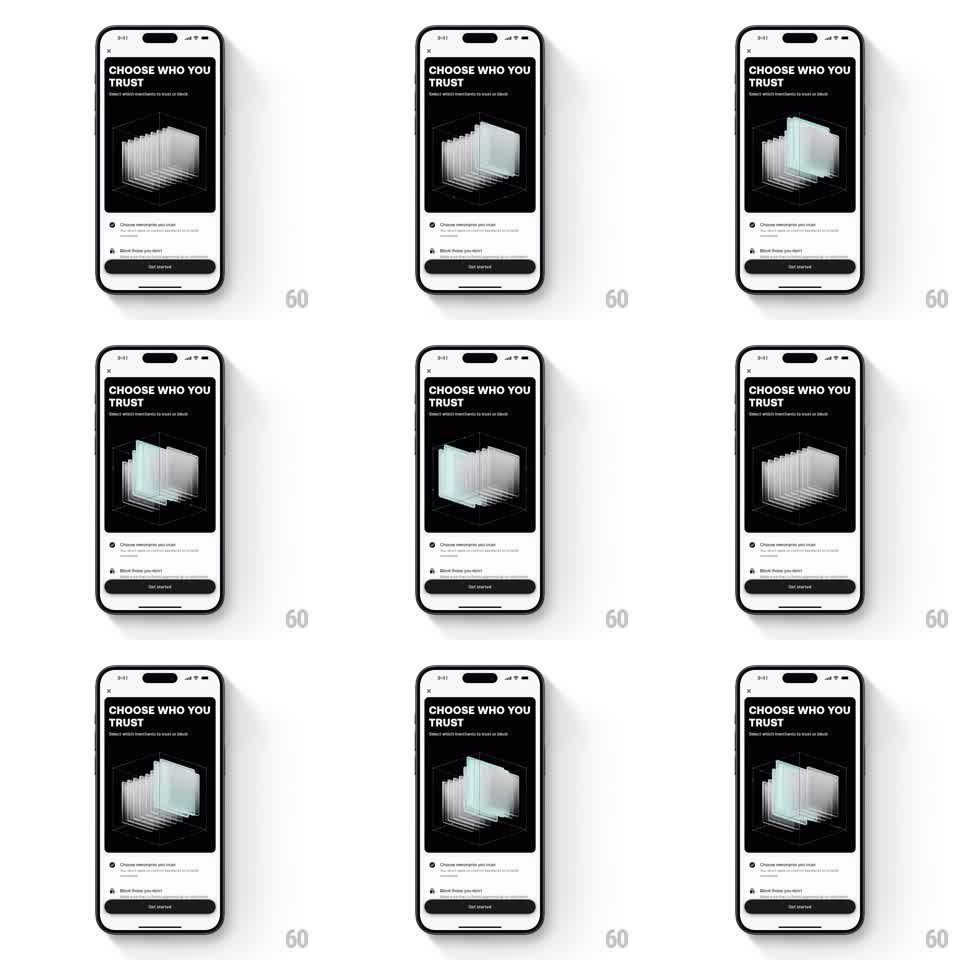

Media
Frame-by-frame

Rebuild this animation 1:1: Revolut's "Choose who you trust" hero - inside a dark card, a 3D stack of translucent glass cards rotates on its vertical axis with a soft cyan glow breathing through it.

Rebuild this animation 1:1: Revolut's "Choose who you trust" hero - inside a dark card, a 3D stack of translucent glass cards rotates on its vertical axis with a soft cyan glow breathing through it. ## Integration Integration: stack-agnostic spec - springs given as stiffness/damping, timed motions as duration + curve; map every value to your framework and animation library of choice. ## Scene Onboarding screen: close X, "CHOOSE WHO YOU TRUST" title + subcopy, a dark hero panel containing the glass stack inside a faint wireframe cube, two bullet rows, Get started button. ## Motion spec Pattern: looping 3D glass rotation, ~6s per turn. - The stack of ~8 translucent cards rotates slowly and continuously on its vertical axis (linear, seamless loop). - Each pane catches light as it turns - a cyan-tinted highlight sweeps across successive panes, so the stack reads as glass, not paper. - A soft glow at the stack's core pulses gently (alpha +-15%, ~3s cycle), independent of the rotation. - The wireframe cube and all text stay static. ## Calibration - Rotation is slow enough to read individual panes; faster turns it into a fan blur. - Panes keep consistent spacing through the rotation - wobble breaks the machined feel. ## Reduced motion Static three-quarter view of the stack with a single slow glow breathe. ## Don't miss - The loop must be perfectly seamless - any hitch at the wrap point is glaring on a hero. - Glass panes need both faces rendered (front and back surfaces) or the rotation looks hollow.